ユーザー指定の基準

入力で受け取り、3連続で跳び、5連続で笑顔に。画像は通常アプリの実際の筆算・実際の回答から撮影しています。
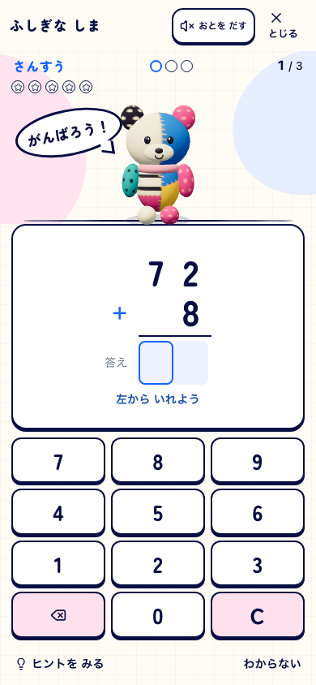
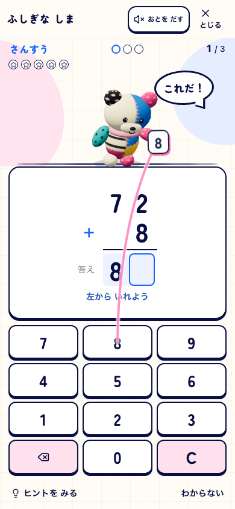
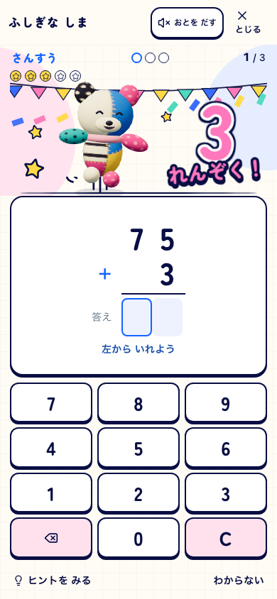
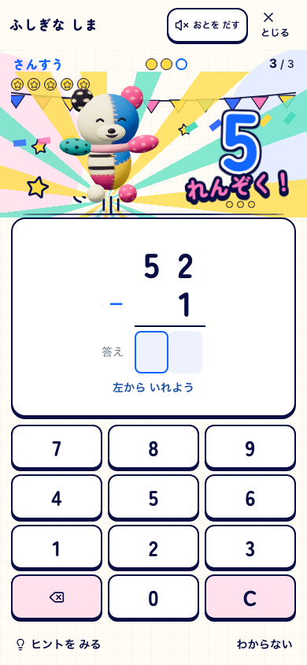
390×844 / pokomoko-pop-live-v7 / DEV 5198 / 2026-09-28。問題は通常生成のため参考画像の27+35とは異なります。
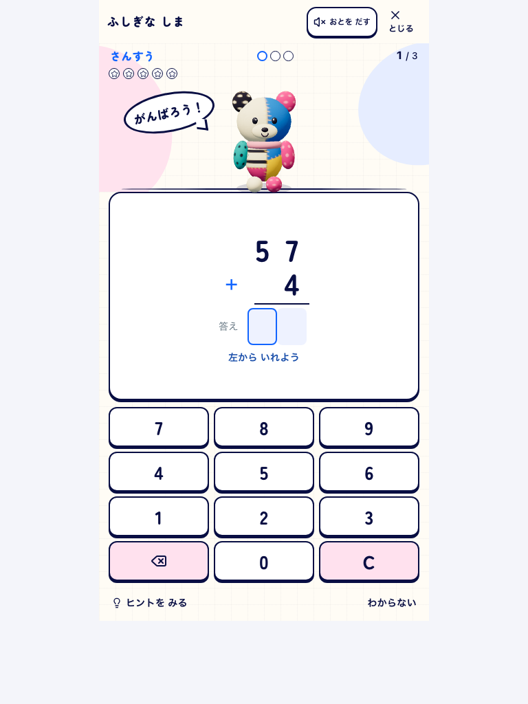
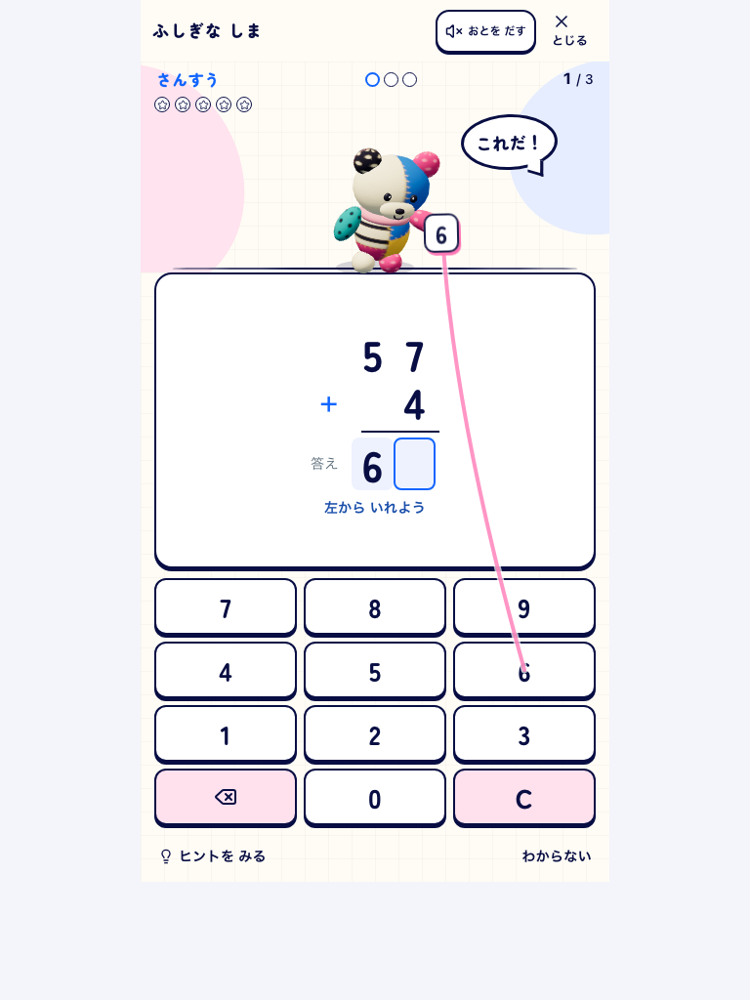
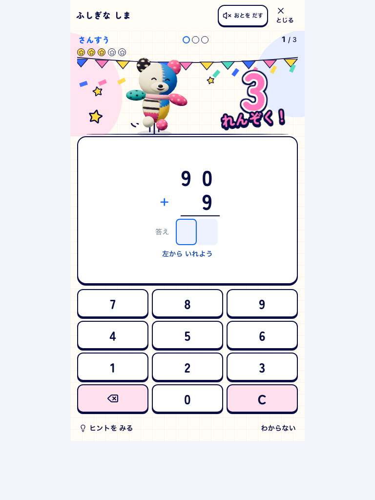
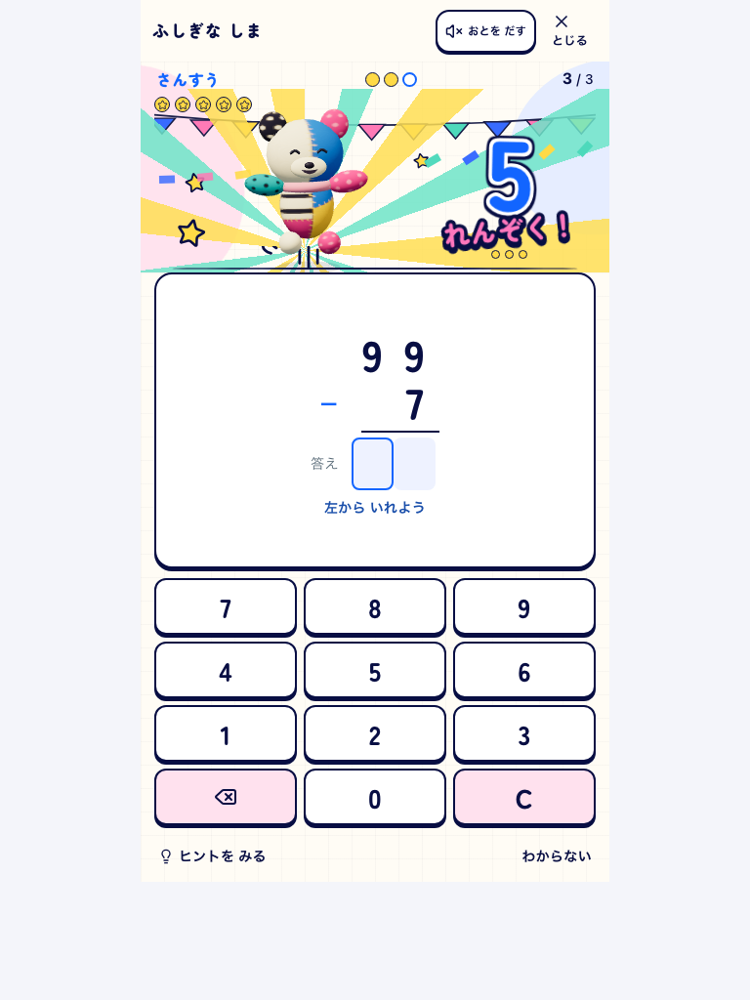
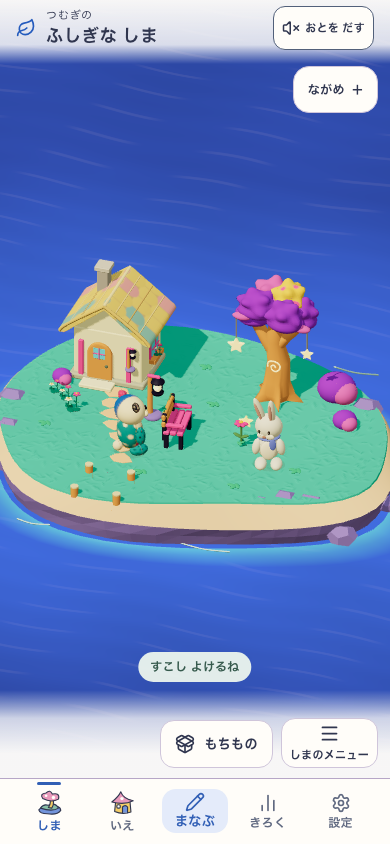
5298 / Island・Life・Fantasy有効。上のDEV撮影とは入口の構成が異なります。
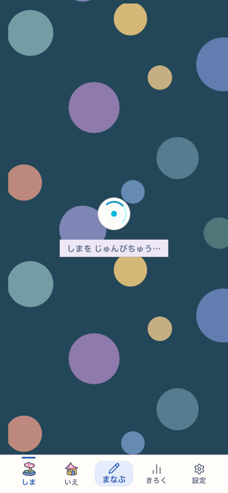
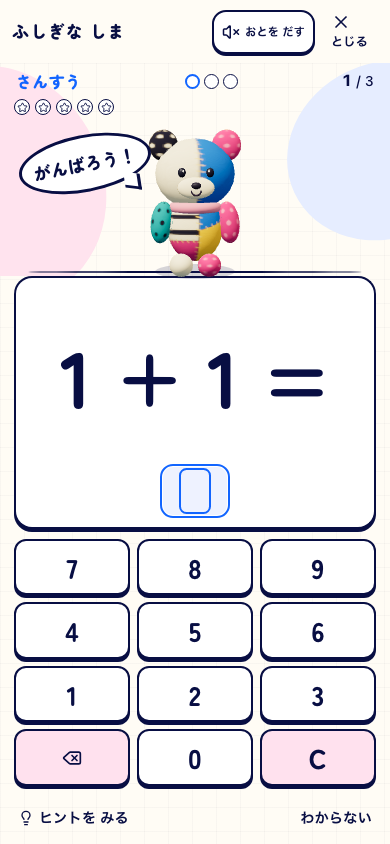
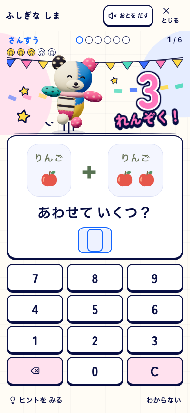
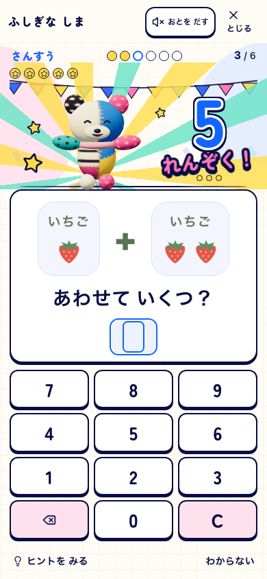
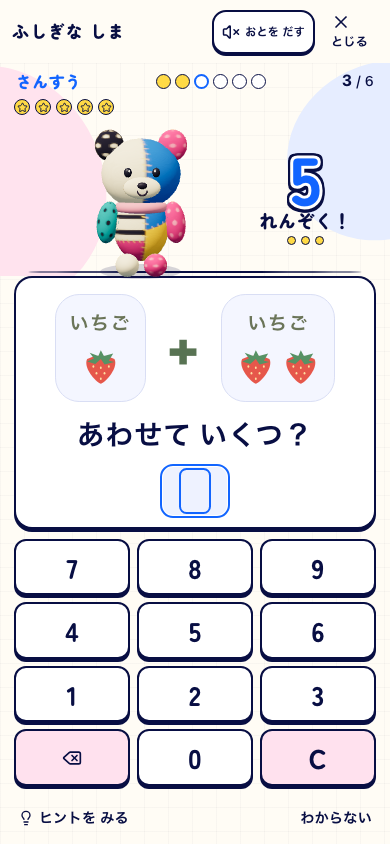
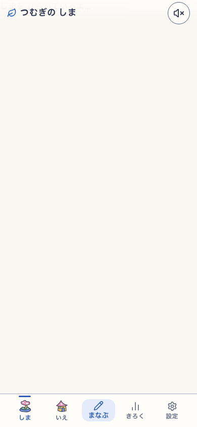